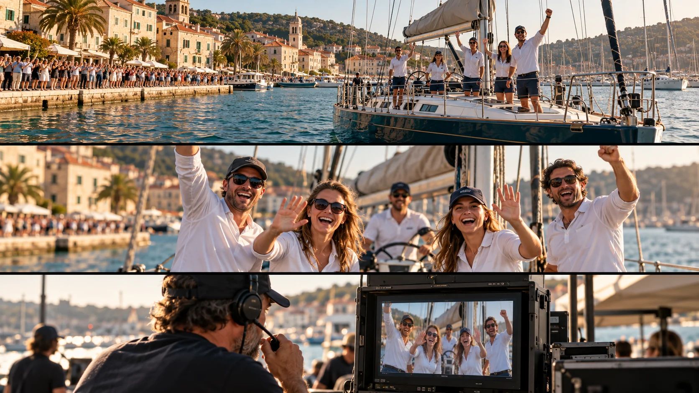

P26 · 고급 · 제작·활용
Clipper Race: 편집실 대신 생방송으로 전달하기
카메라의 통과·현장 반응·감독의 수신을 같은 시간 흐름에서 점검한다.
그림에서 확인할 세 가지촬영 순간과 생방송 수신까지 성공 조건에 넣는다.
1선원의 반응
가상 요트 그림에서 선원들의 손짓과 몸 방향을 본다. 선박의 규모보다 사람들의 반응이 읽히는 화면 크기인지 판단한다.
2넓은 장면과 가까운 반응
위쪽 항구 전경과 가운데 선원들의 가까운 모습을 비교한다. 배와 관중의 관계를 읽는 화면과 얼굴·손짓을 읽는 화면의 정보가 어떻게 다른지 본다.
3감독 화면의 수신
감독이 보는 화면과 현장 장면의 대응을 살핀다. 카메라가 담은 대상과 방송팀이 확인하는 대상이 같은지 기준을 정한다.
원리를 설명하는 가상 학습 장면
촬영 설계
촬영을 이렇게 설계한다
방송에 필요한 순간 합의
교육 제안: 카메라가 무엇을 보여줄 때 감독이 화면을 쓰는지 먼저 정한다. 출항 전체를 찍는다는 말보다 선원 반응·선박 배열·관객 호응처럼 사용 목적이 분명한 장면을 구분한다.
촬영과 반응 신호 맞추기
교육 제안: 관객에게 주는 카운트다운과 카메라가 원하는 구도를 얻는 순간을 비교한다. 반응이 먼저 끝나거나 기체가 지나간 뒤 시작하면 필요한 컷을 얻었는지 따로 판단한다.
전달 실패의 대안 마련
교육 제안: 화면 수신이나 현장 조건이 달라질 때 감독이 대신 쓸 장면을 합의한다. 현장에서 좋은 화면을 봤다는 것과 방송에 실제 전달됐다는 것을 각각 확인한다.
Clipper 요트 경기의 출항과 귀환 행사에서 FPV 영상을 생방송으로 공급했다.
원본 영상Clipper Race: 편집실 대신 생방송으로 전달하기
1. 반응의 가독성
선원이나 관중이 반응하는 구간에서 손짓과 표정의 크기를 본다. 선박 전체를 설명하는 화면과 사람의 반응을 보여주는 화면을 구분한다.
2. 시점의 일치
메이킹에 현장과 수신 모니터가 함께 나온다면 같은 반응이 보이는지 확인한다. 화면이 켜졌다는 사실과 필요한 장면을 받았다는 사실을 구분한다.
3. 라이브와 기록물
원본이 생방송 출력인지 이후 편집한 메이킹인지 먼저 확인한다. 현장의 실제 송출 흐름을 메이킹의 컷 순서로 추정하지 않는다.
재생이 제한되면 원본 영상 새 창을 이용하세요.
제작진 설명 · 한국어 요약 번역
방송 연결과 사전 점검
방송 연결
원문 요약 번역: 제작사는 Unique Media 방송팀과 실시간으로 조율하며 FPV 영상을 글로벌 중계에 공급했다고 설명한다.
비행 계획
솔렌트 해역의 조류, 선박 통행, 관객 구역을 반영해 비행 계획을 세웠다.
위험성 평가와 작업 방법서는 두 촬영 모두 전에 승인을 받았다.
사전 점검
방송팀과의 통신과 장비는 시험 비행으로 점검했고 장비 고장과 날씨 변화 대비책도 마련했다.
제작진 설명 · 한국어 요약 번역
역할 분담과 생방송의 시간
역할 분담
원문 요약 번역: 팀은 FPV 비행팀 역할을 맡았고 전담 관측자가 비행 내내 기체를 지켜봤다.
육상의 원격 감독이 승무원과 실시간으로 소통했다.
현장 신호
확성기 카운트다운으로 육상 관객과 해상 선원의 반응을 카메라 통과에 맞췄다.
시간의 구분
후반 제작 단계가 없는 생방송이라 처음부터 맞아야 했다고 한다.
2024년 귀항 촬영은 약 4시간 이어졌고 배터리를 교체한 총 운영 시간이다.
Kling 프롬프트단문 인과 체인 · 16:9
내가 직접 만들어 본다
카운트다운이 반응을 만들고 드론의 접근 시점이 반응과 맞고 그 장면이 감독 화면에 닿는 순서를 지시한다.
한계 · 실제 방송 수신과 전송 지연, 대체 화면 준비는 영상으로 검증할 수 없다.
- S01항구에서 요트 한 척이 출항을 준비한다.
- S02영상은 하나의 연속 쇼트다.
- S03선원들이 갑판에서 카운트다운을 외친다.
- S04처음 10초 동안 드론은 항구 전경으로 요트와 관중을 담는다.
- S05카운트다운이 끝나자 선원들이 손을 흔든다.
- S06다음 10초 동안 드론은 손 흔드는 순간에 맞춰 요트로 다가간다.
- S07드론이 가까워지기 때문에 선원들의 손짓이 크게 읽힌다.
- S08선원들은 드론을 향해 몸을 돌린다.
- S09마지막 10초 동안 드론은 요트를 지나 부두로 돌아온다.
- S10부두 천막 안에서 감독이 화면을 본다.
- S11화면 속에는 방금 지나간 요트와 선원들이 있다.
- S12감독이 그 화면을 가리키며 고개를 끄덕인다.
[네거티브]
- 요트 대신 항구에 큰 배만 가득한 것 금지
- 중간 컷으로 장면이 끊기는 것 금지
- 선원들이 갑판이 아닌 부두에 서 있는 것 금지
- 요트나 관중이 전경에서 빠지는 것 금지
- 카운트다운이 끝나기 전에 손을 흔드는 것 금지
- 손 흔드는 순간이 지난 뒤 도착하는 것 금지
- 가까워져도 선원이 점처럼 작게 보이는 것 금지
- 선원들이 드론과 상관없이 딴 곳을 보는 것 금지
- 드론이 요트를 지나 바다로 멀어지는 것 금지
- 감독이 천막이 아닌 갑판에 서 있는 것 금지
- 화면 속에 다른 배나 엉뚱한 풍경이 나오는 것 금지
- 감독이 화면 대신 드론만 바라보는 것 금지
결과에서 볼 것
- 선원의 반응이 신호 직후에 일어났는가
- 드론이 반응 순간에 맞춰 가까이 도착했는가
- 감독 화면에 같은 장면이 대응했는가
프롬프트 설계안이다. Kling에서 실제로 생성해 보기 전에는 결과를 보장하지 않는다. 길이와 모드는 Kling 화면에서 확인해 고른다. 이미지에서 영상으로 만들 때는 첫 프레임 이미지를 실제 입력으로 넣는다.